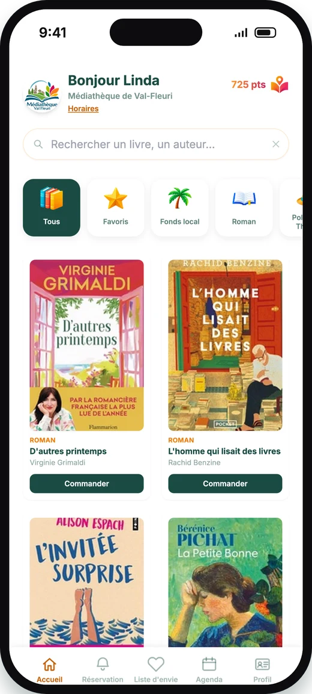

Un vrai logiciel de gestion de bibliothèque (SIGB) pour vos agents, une application gratuite pour vos habitants : catalogue, réservations Click & Collect, agenda culturel et dons participatifs.

Les livres disponibles et à jour en temps réel.
Réservez un livre, on vous prévient dès qu'il vous attend à l'accueil.
Donnez une seconde vie à vos livres et gagnez des points de fidélité.
Consultez les événements de votre médiathèque (expositions, ateliers, rencontres) et réservez votre place directement depuis l'appli.
Je télécharge l'application BliGO et je crée mon compte en quelques minutes.
Je réserve jusqu'à 3 livres dans le catalogue de ma commune.
Je récupère mes livres réservés à la médiathèque dans les 48h (pièce d'identité et justificatif de domicile à présenter lors de ma première récupération, autorisation parentale en plus si je suis mineur·e).
Je profite de mon prêt, puis je viens rendre les livres dans les 3 semaines qui suivent.
Je donne les livres en bon état dont je souhaite me séparer, pour en faire profiter les habitants de ma commune.
Chaque commune a ses besoins propres. On en discute ensemble, on vous montre l'outil, et on construit une offre adaptée à la taille de votre médiathèque.
Disponible partout en France, y compris dans les DROM-COM.
BliGO est un logiciel de gestion de bibliothèque (SIGB) nouvelle génération, conçu pour les Médiathèques Municipales et les intercommunalités, couplé à une application gratuite pour les habitants. Côté agents : catalogage en scannant l'ISBN (notices récupérées automatiquement depuis la BnF, Google Books et Open Library), prêts et retours à la douchette ou au smartphone, suivi de chaque exemplaire, transferts entre Médiathèques du territoire et agenda culturel. Côté habitants : catalogue en ligne, réservation Click & Collect, agenda culturel et dons de livres. Disponible partout en France, DROM-COM compris.
Oui. BliGO remplace à la fois votre SIGB et votre portail usager : un seul outil pour les agents et pour les habitants. Votre fonds est repris à partir d'un export UNIMARC ou CSV de votre système actuel (Koha, PMB, Orphée, Decalog…), sans tout recataloguer. Vos données vous appartiennent : vous pouvez exporter votre catalogue en CSV ou UNIMARC à tout moment, et le contrat est d'un an renouvelable.
Oui. L'application est gratuite pour les usagers, sans publicité ni abonnement. Le prêt des livres via la médiathèque de leur commune est lui aussi totalement gratuit : c'est un service proposé par leur commune de rattachement. Chaque habitant inscrit à sa médiathèque peut emprunter 3 livres pour une durée maximale variable selon la commune (entre 2 et 4 semaines).
Non, pas forcément. BliGO fonctionne directement dans un navigateur, sur téléphone comme sur ordinateur. Les applications iOS et Android arriveront prochainement.
Oui. Pré-inscription en ligne dans la commune de résidence, puis validation sur place par un agent avec pièce d'identité et justificatif de domicile (autorisation parentale en plus pour les mineurs). Aucun document administratif n'est demandé par BliGO, et la gestion des données respecte le RGPD, du compte habitant jusqu'au don de livre.
Votre commune doit nous contacter via le formulaire ci-dessous : on planifie un premier échange pour comprendre vos besoins et vous présenter l'outil BliGO.
Un agent de la médiathèque examine chaque don depuis le logiciel avant de l'ajouter au catalogue. Si les livres donnés sont en mauvais état ou déjà présents dans le catalogue, ils sont proposés sur une étagère hors condition : n'importe qui peut alors les prendre, même sans être rattaché à la commune, sans jamais devoir les rendre ni faire de don en retour.
Écrivez-nous, on vous répond avec plaisir !
Votre message a bien été envoyé, on vous répond très vite !
Une erreur est survenue, réessayez ou écrivez-nous directement à megane@bligo.fr.
Vous préférez les e-mails ? Écrivez directement à megane@bligo.fr